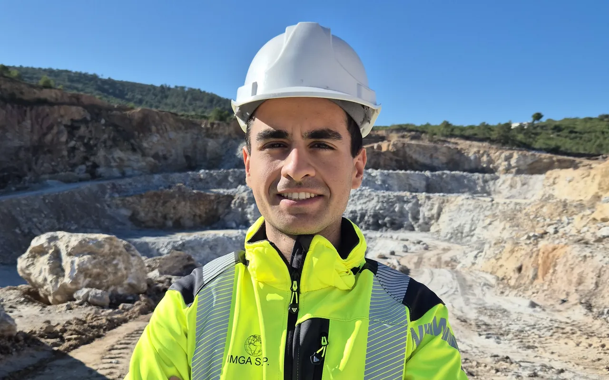

Autor · mantenedor · titular de los derechos de autor
Samuel Sáez López
Ingeniero de minas · doctorando, Universidad Politécnica de Cartagena (UPCT)
Doctorando del programa Tecnología y Modelización en Ingeniería Civil, Minera y Ambiental de la UPCT. Escribe y mantiene el código de OpenGeoRock y dirige el diseño tanto de su motor de cálculo como de su interfaz; su investigación doctoral sobre estabilidad de taludes y mecánica de rocas alimenta directamente los métodos numéricos que se publican aquí.